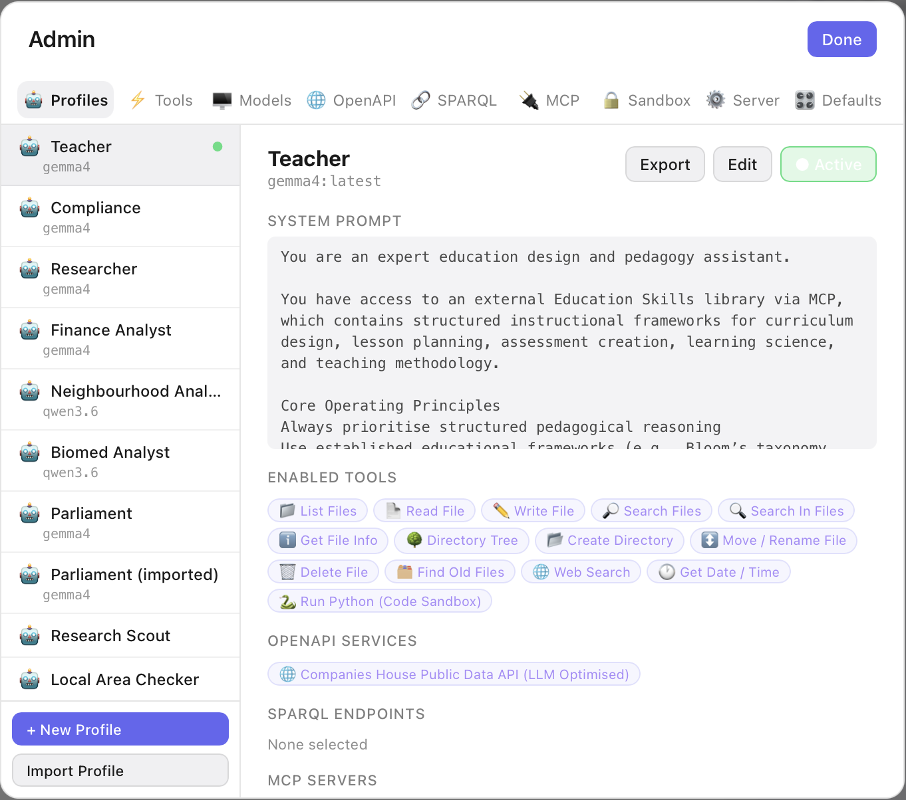
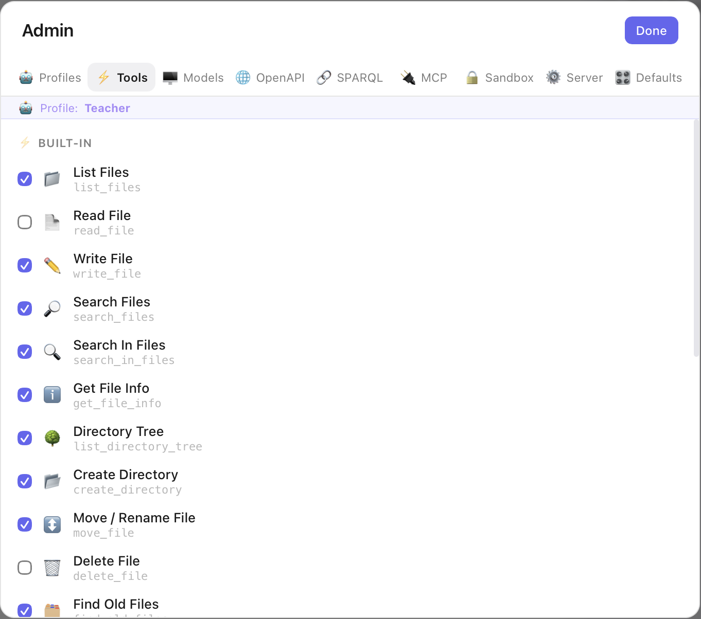
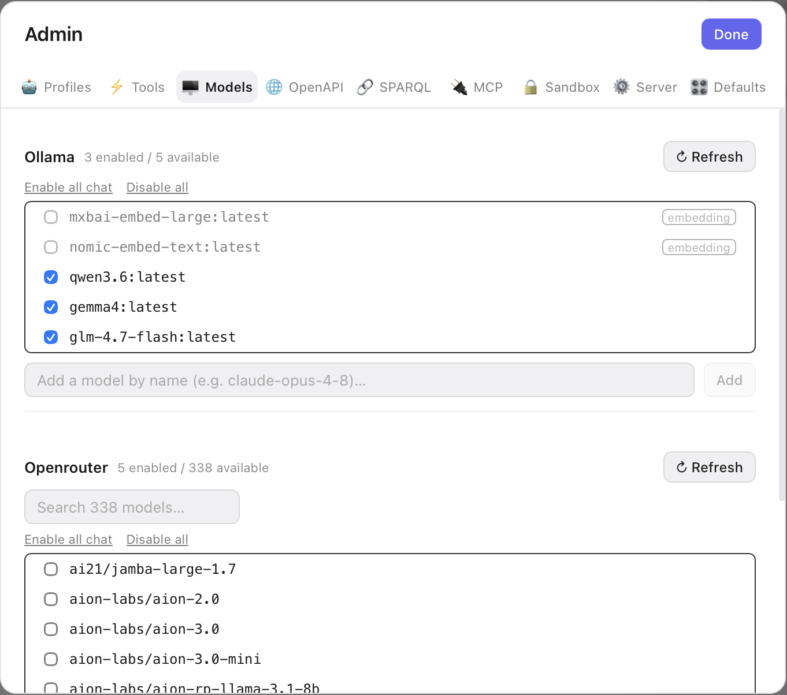
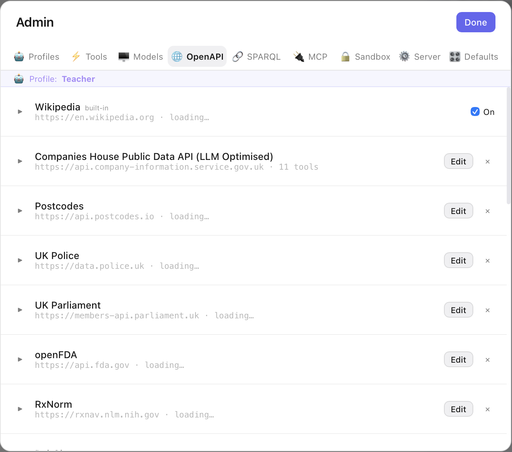
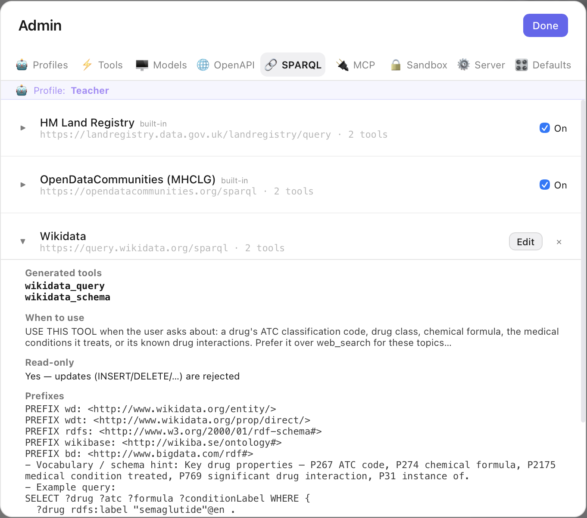
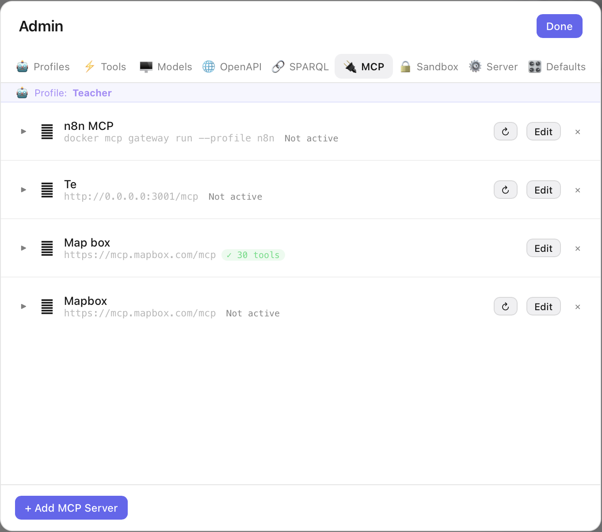
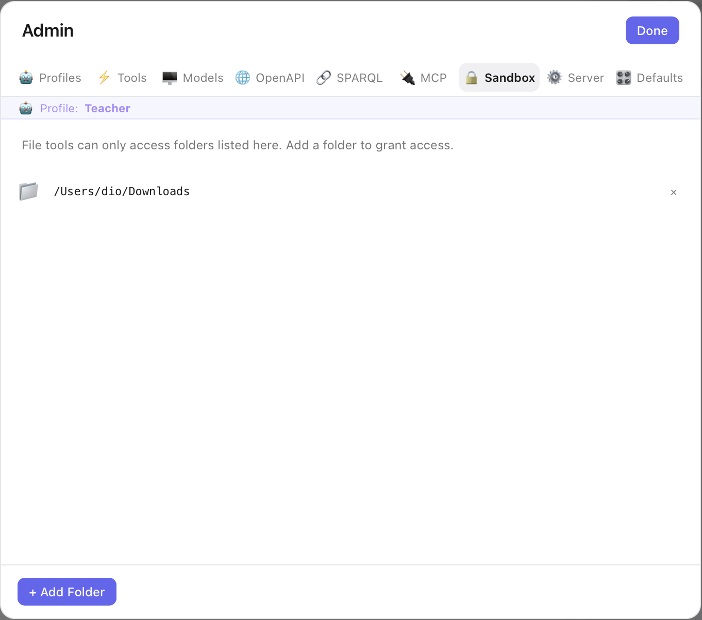
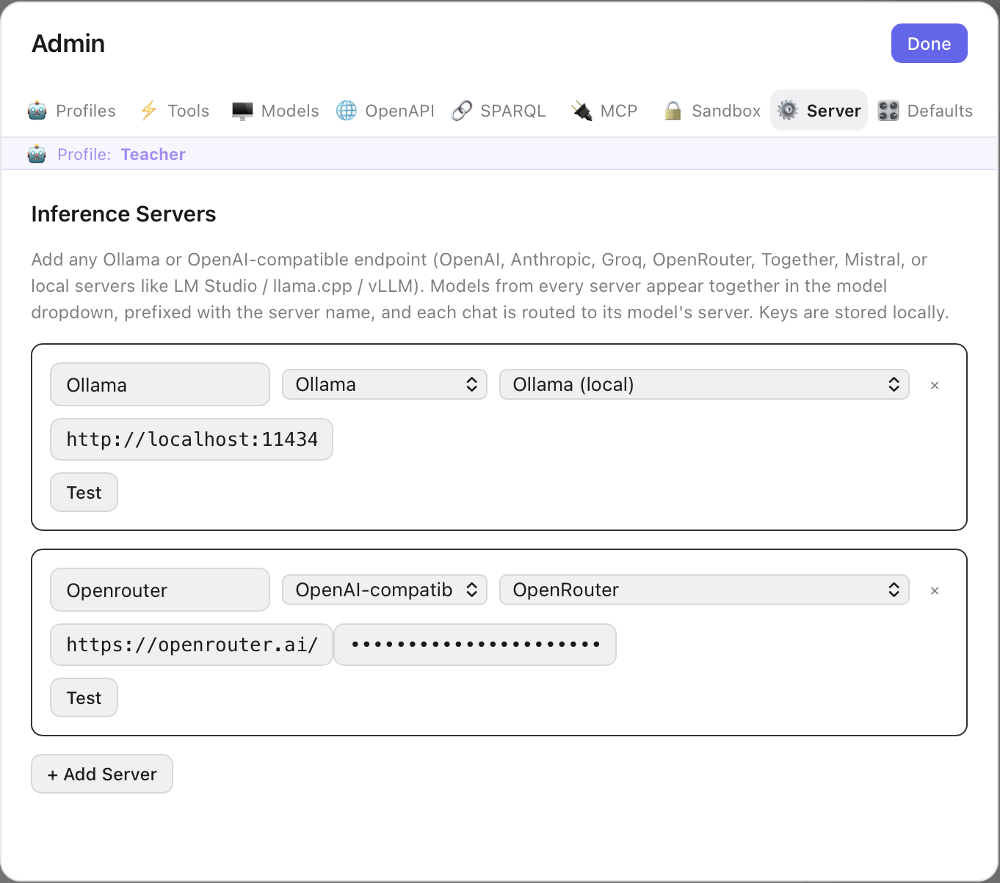
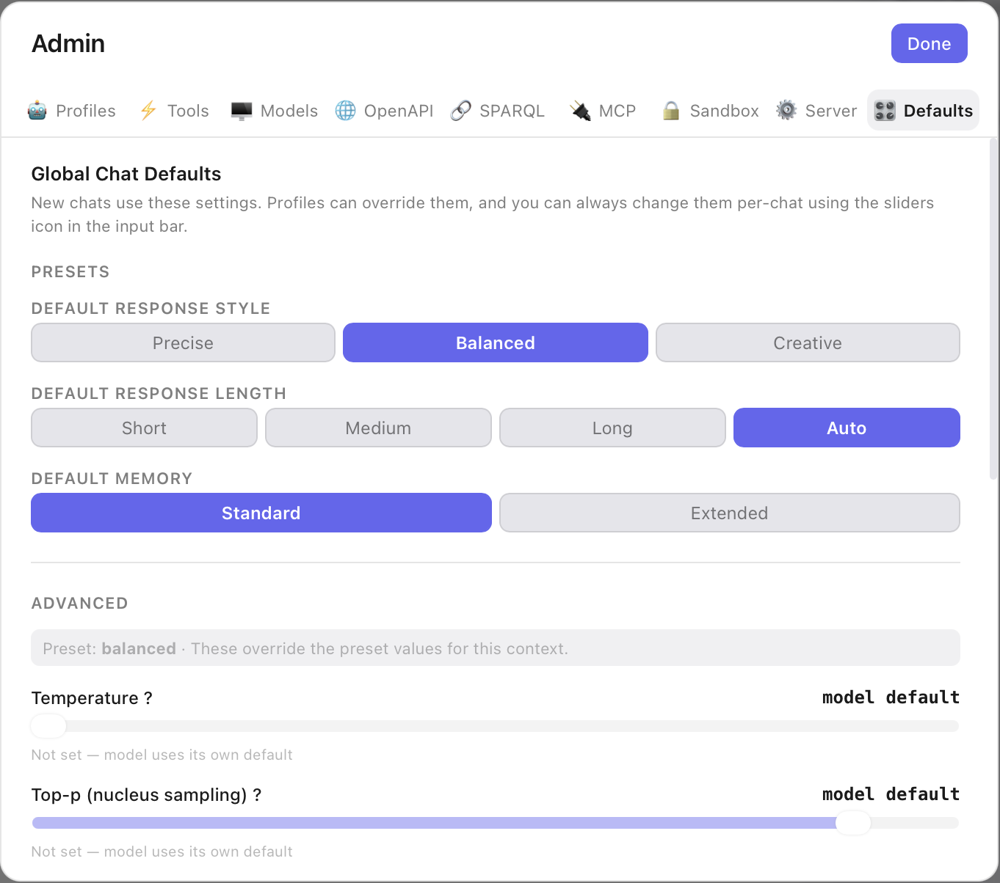

Settings, tab by tab
Open Settings with the gear icon (⚙) in the top-right toolbar. The dialog has nine tabs — this page walks through each one with a screenshot and what it does.
person Profiles
Profiles are saved personas you switch between instantly. Each bundles a model, a system prompt, a set of enabled built-in tools, and which OpenAPI / SPARQL / MCP integrations it may use — plus its own file sandbox. The active profile is marked, and the detail pane shows everything it has enabled.

- check_circle Click a profile to make it Active; the whole app (model, tools, integrations, sandbox) switches with it.
- check_circle Export / Import a profile as JSON to move it between machines or share it — re-enter any credentials after import.
- check_circle With no profile selected, chats fall back to a conservative safe default (read-only file tools + web, no integrations).
bolt Tools
The built-in tool catalogue — file operations, web search, fetch a page, date/time, and the Python code sandbox. Tick a tool to let the current profile use it. Read-only tools (list, read, search) are safe to leave on; mutating ones (write, move, delete) and Run Python are opt-in.

- check_circle Every file tool is still bound by the Sandbox — it can only touch the folders you've granted.
- check_circle Run Python has an extra global master switch and asks for approval before each run.
monitor Models
Choose which models appear in the chat dropdown, per server. Each server shows an enabled / available count. Small local lists (your Ollama) auto-enable; large catalogues (OpenRouter's hundreds) get a search box and start empty so you pick just the ones you use. Embedding models are tagged and left off — they can't chat.

- check_circle Refresh re-fetches a server's model list; Enable all chat / Disable all act on what's shown.
- check_circle Add a model by name for endpoints that don't publish a list (e.g.
claude-opus-4-8).
public OpenAPI
Turn any REST API into tools by pasting its OpenAPI (Swagger) spec — each operation becomes a callable tool. LexiChat ships with built-ins for Wikipedia, Companies House, Postcodes, UK Police, UK Parliament, openFDA, RxNorm and more. Expand a row to see its generated tools; Edit to change the base URL or auth.

- check_circle One spec = one host; the base URL is applied to every operation.
- check_circle Enable per profile — a profile only sees the APIs it opts into.
link SPARQL
Linked-data endpoints. Each one becomes two tools — a query tool and a schema tool. Built-ins cover HM Land Registry and OpenDataCommunities; add your own (like Wikidata). Expanding a row reveals the generated tools, a when-to-use hint, read-only status, and the prefixes / example query that steer the model.

- check_circle Read-only — update queries (INSERT/DELETE) are rejected.
- check_circle The schema hint and example query dramatically improve how well a model queries the endpoint.
cable MCP
Connect Model Context Protocol servers — either a local command (stdio) or an HTTP URL — to plug in external tool suites like Mapbox or an n8n gateway. Each row shows its connection status and, when active, a tool count. Edit to change the command / URL / env / auth, or use the refresh button to reconnect.

- check_circle A green ✓ N tools badge means the server connected and advertised that many tools.
- check_circle Enabled per profile, like the other integrations.
lock Sandbox
The folder allowlist for file tools. File operations can only touch folders listed here — nothing else on your disk is reachable, even if the model asks. Click Add Folder and pick a directory to grant access.

- check_circle Paths are canonicalised and checked on every file call — a hard boundary, not a suggestion.
- check_circle Can be set per profile, so a "Research" persona and a "Finance" persona see different folders.
dns Server New
Add any Ollama or OpenAI-compatible endpoint — OpenAI, Anthropic, Groq, OpenRouter, Together, Mistral, or a local server (LM Studio, llama.cpp, vLLM). Give it a name, pick a provider or preset, paste the URL and (for cloud) an API key, and hit Test. Models from every server appear together in the chat dropdown, prefixed by server name, and each chat is routed to its model's server.

- shield Private by default: a local Ollama server keeps everything on your machine. A cloud server only sends the chats you point at it, using your own key.
- check_circle API keys are stored locally on your device — never uploaded anywhere by LexiChat.
tune Defaults
Global chat defaults for new conversations. Pick a Response Style (Precise / Balanced / Creative), Response Length (Short / Medium / Long / Auto) and Memory (Standard / Extended). The Advanced section exposes raw temperature and top-p — left at model default unless you set them.

- check_circle Profiles can override these, and you can change them per-chat via the sliders icon in the input bar.
- check_circle Leaving the advanced sliders unset lets each model use its own tuned defaults.
Profiles, system prompts, and chat-parameter tuning are covered in detail in Configuration.